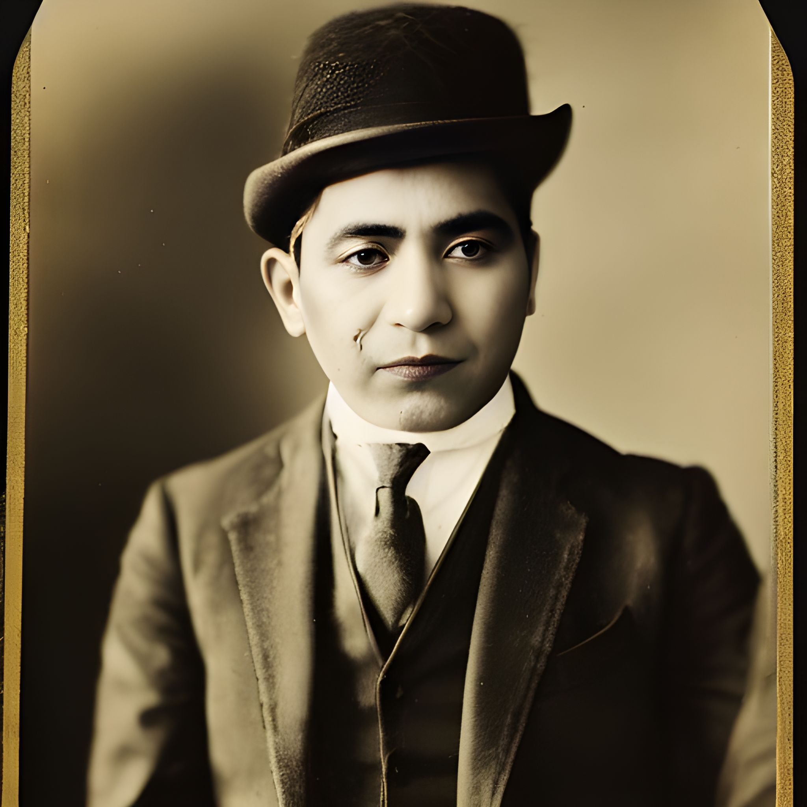

FRH New Player Packet
Chapter-House People Appendix
A quick player-facing introduction to the people who make Edgar's invitation feel concrete: the medium who found the house, the scholar who helped interpret it, and the man who keeps the practical world from coming apart around them.
Why This Page Exists
The main packet keeps Cloudburg broad and Edgar's letter personal. This appendix sits between those two modes. It gives a first visual and social orientation to the people behind the chapter house without demanding that a new player memorize a full continuity document.
The point is not to front-load continuity. It is to help new players feel that Edgar's invitation belongs to a living place with real people around it: one patron, one scholar, and one dependable practical hand who keep the restored chapter house from becoming only an idea.
At the House

Edgar Von Haupt
Edgar Von Haupt is the man most new investigators meet first, and in many ways he is the present face of the restored Followers of the Right Hand. He is a wealthy occult scholar, an unusually sensitive medium, and the owner of the Cloudburg estate that now serves as the early chapter house of the revived organization.
What matters most for new players is that Edgar is not a distant mastermind so much as a hopeful patron holding together scholarship, secrecy, intuition, and practical support. He can offer letters of introduction, a safe place to work, access to unusual texts and artifacts, and the sense that your character is joining something meaningful rather than merely taking a job.

Dr. David Blunth
Dr. David Blunth is one of the key scholarly figures behind the early restoration of the Followers of the Right Hand. A professor of history and anthropology at Isla Oro University, he was one of the first people Edgar trusted with the truth of what had been found beneath the house in Cloudburg.
Blunth brought academic rigor, language expertise, and a steady seriousness to the project; where Edgar supplied mediumship, instinct, and patronage, Blunth helped turn fragmentary discoveries into usable understanding. For new players, he represents the part of FRH that believes hidden things can be studied responsibly rather than only feared.

Alfredo Arce
Alfredo Arce is Edgar's man: aide, servant, driver, messenger, and trusted pair of hands when practical matters need doing. In a setting full of strange visions, coded histories, and supernatural danger, Alfredo represents something solid and dependable.
If Edgar is the patron who opens the door, Alfredo is often the person who makes sure someone is there to meet you at the station, carry out instructions, and keep the house running. He helps the chapter house feel inhabited rather than theatrical.
Reading Use
This page is not meant to replace the letter or the Cloudburg chapter. It exists to give faces and a little social grounding to names that otherwise arrive all at once.